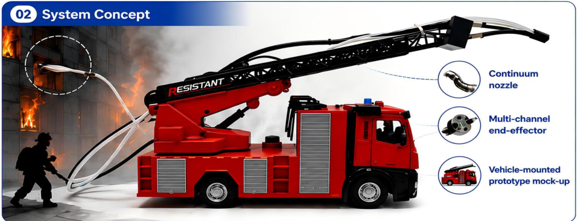
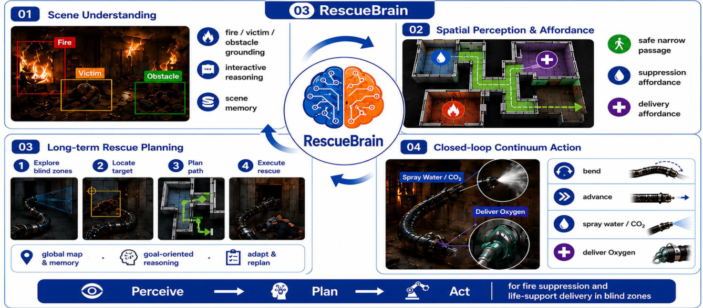
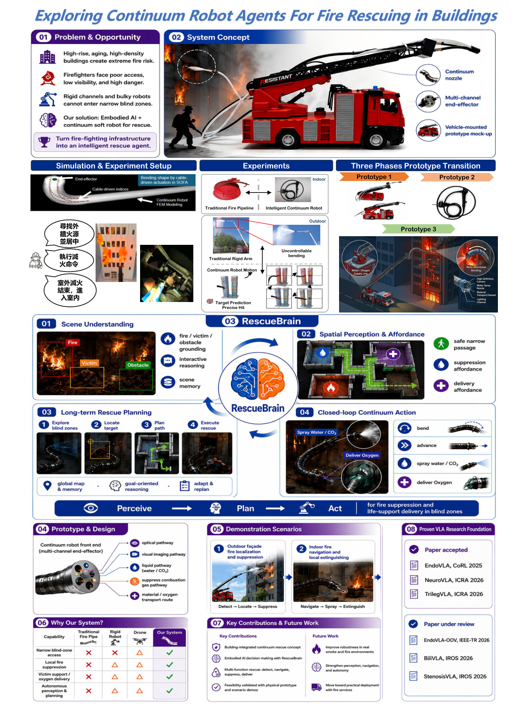

Confined-space access
A flexible tip is intended to navigate narrow openings and complex obstacles that constrain rigid equipment.
Flexible access. Visual understanding. Closed-loop action.
Toward robot-assisted rescue in confined building spaces.

Fire rescue in dense buildings involves narrow passages, occluded regions, and restricted access. Inspired by flexible endoscopic exploration, this project investigates continuum robot agents that combine a steerable body with visual understanding and coordinated task execution.
The proposed system couples scene understanding and spatial reasoning with a vision-language-action layer for flexible navigation and manipulation. A multi-channel front end is designed to integrate illumination, visual imaging, fluid delivery, gas delivery, and material transport. The supplied demonstrations present miniature high-rise, residential, and factory scenarios involving target localization, directed water spraying, and mask delivery.
本專案探索面向建築火災救援的具身智能連續體機器人，結合視覺理解、柔性導航及多通道作業。現有材料展示高樓、住宅與工廠微縮場景；真實火場部署與完整定量驗證仍屬後續研究。
A flexible tip is intended to navigate narrow openings and complex obstacles that constrain rigid equipment.
Ground task-relevant targets and obstacles in the robot view to support rescue-oriented reasoning.
Coordinate navigation, localized water spraying, and material delivery through one continuum platform.
The poster describes RescueBrain as an architecture linking scene understanding, spatial affordances, long-term rescue planning, and closed-loop continuum action.


Original video clips extracted from the supplied presentation. Switch scenarios to compare robot and external views.
These are miniature laboratory scenarios. The source materials do not provide controlled benchmarks, trial counts, success rates, or evidence of deployment in operational building fires.
| Component | Current evidence | Status |
|---|---|---|
| Robot & building tasks | Prototype photos and embedded miniature-scene clips. | Demonstrated |
| RescueBrain architecture | System diagrams and a proposed perception–action workflow. | Concept |
| Real-fire robustness | Smoke, heat, and field reliability require further evaluation. | Future work |
| Code & quantitative evaluation | No implementation release or benchmark tables supplied. | Not released |

RoboBrain 2.0 Technical Report — background for the scene-understanding and reasoning concept.
EndoVLA: Dual-Phase Vision-Language-Action Model for Autonomous Tracking in Endoscopy — background for the continuum action layer. These links identify related work; they are not a publication citation for this project.